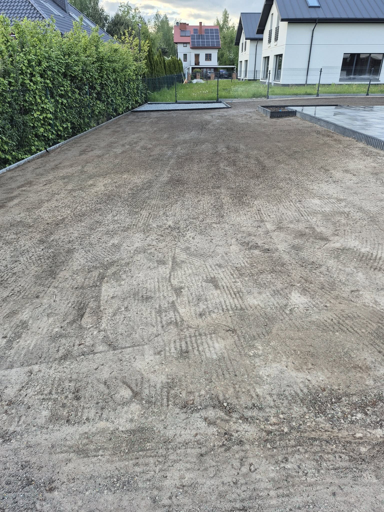
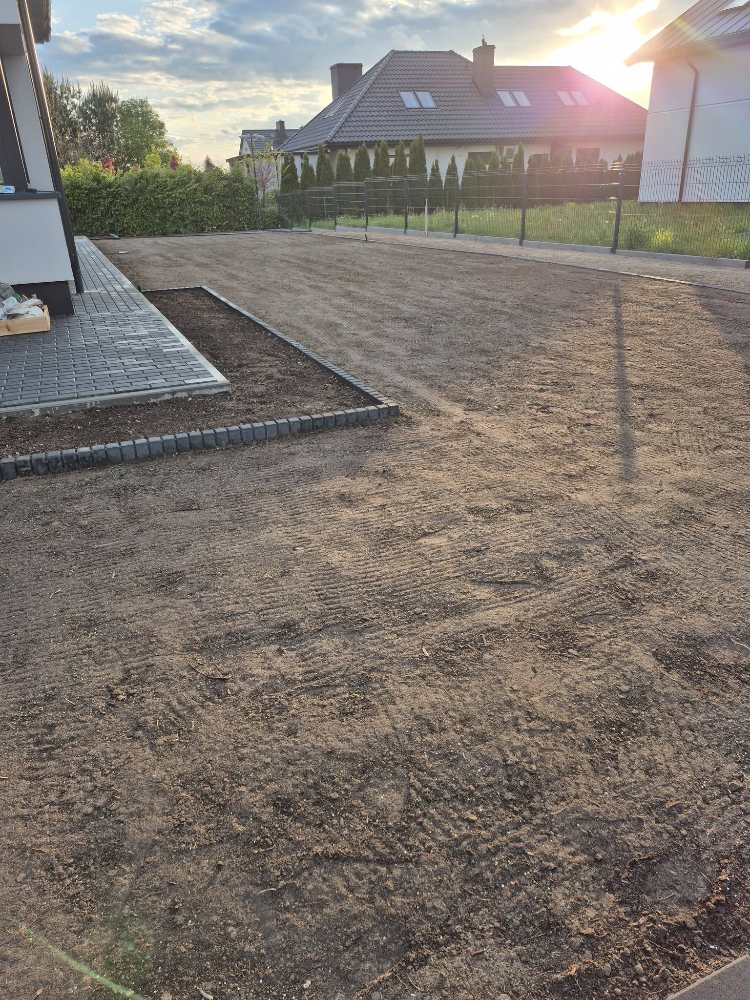

Efekt Realizacji
Przestrzeń do relaksu z trawnikiem, ozdobną rabatą z kostki i wygodnym patio
.jpg)


Kolejny projekt wykonany na życzenie naszej przemiłej klientki z Janowa Lubelskiego. Urokliwy projekt z trawnikiem, rabatą z kostki oraz ogrodowym patio do relaksu przy filiżance kawy ☕.
Przestrzeń do relaksu z trawnikiem, ozdobną rabatą z kostki i wygodnym patio
Ten projekt był realizacją marzeń o przestrzeni do odpoczynku w domowym ogrodzie. Klientka chciała stworzyć miejsce, gdzie będzie mogła zrelaksować się przy porannej kawie, ciesząc się widokiem zielonej przestrzeni.
Wykonanie prac polega≈Ço na przygotowaniu terenu i zasianiu trawy, zrobieniu ozdobnej rabaty z kostki oraz stworzeniu funkcjonalnego ogrodowego patio. Teraz wystarczy poczekaƒá, a≈º wszystko się pięknie zazieleni üòâ
Profesjonalne przygotowanie terenu i zasiew trawy
Ozdobne obramowanie z kostek brukowych
Przestrzeń do relaksu przy porannej kawie
• Przygotowanie terenu
• Zasiew trawy
• Rabata z kostki brukowej
• Ogrodowe patio
Każdy projekt to unikalna historia transformacji
Skontaktuj się z nami, aby omówić stworzenie relaksacyjnej przestrzeni w Twoim ogrodzie